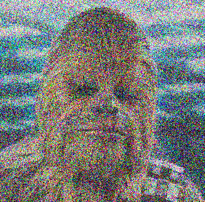

Assignment 2: Image Processing And Steganography (60 Points)
Chris Tralie
Table of Contents
- Overview / Logistics
- Background: RGB Images And Steganography
- Part 1: Decode Text (15 Points)
- Part 2: Encode Text (15 Points)
- Part 3: Linear Feedback Shift Register (15 Points)
- Part 4: Encoding/Decoding Encrypted Text (15 Points)
- Other Ideas for The Bored
Overview / Logistics
The purpose of this buddy assignment is to put your knowledge of binary, bitwise operators, and 2D arrays together into a fun application where you will hide secret text messages "in plain sight" by changing the colors of pixels in an image ever so slightly to store a binary encoding of text. More specifically, you will be encoding the binary ASCII representation of a character string using the least significant bit of pixels in an RGB image. This is a specific instance of steganography, or hiding one type of data in another data stream.
You can download the code for this assignment by using git in the terminal
git clone --recursive https://github.com/ursinus-cs174-s2022/HW2_Steganography.git
You will be writing a number of different C++ programs in this assignment, so I'd recommend that you update your makefile as you go to make it easier to manage
Fun fact: I proposed to my partner using a similar concept, and it worked 😻. Maybe you can use a similar concept to propose to your significant other, or at least to send a top secret message to your friends.
Learning Objectives
- Manage 2D arrays with loops
- Apply bitwise operators to read and write bits in character strings
- Use command line arguments
- Create a class with a constructor, an instance method, and member variables that's exposed via a header file
- Sharpen debugging skills
Timeline
- By Tuesday 2/15 you should have part 1 and part 2 done. I will have you submit these on canvas to show your progress
- By Friday 2/18, you should have part 3 done.
- The final product will be due on Monday 2/21
What to submit
When you are finished, submit a zip file of all of your code and your makefile. This should include the new files decode.cpp, encode.cpp, and lfsr.cpp, as well as modified versions of randutils.h and randutils.cpp.
Background: RGB Images And Steganography
A color image is actually an array of pixels with 3 dimensions: a row, a column, and a "color channel"; that is, each color pixel has 3 numbers associated to it: red, green, and blue (as explained in the last assignment). Each red/green/blue channel is 8-bits and ranges from 0 to 255.
I've created a wrapper around the stb image library which exposes the pixels as a 3D array. You can access this by using the SimpleCanvas class that I created. For example, below is a code snippet that loads in the image of the penguin provided with your code, puts a 100x100 square at the center of the image, and writes a new version of it to the file penguinredsquare.png:
If you run this code, it will create the following image penguinredsquare.png
This example has pretty much everything you need for this assignment, but I've also provided the programs grayscale.cpp and noise.cpp, which show how to convert an image to grayscale an add noise to it, respectively. For example, making the project and running
creates this image
and
creates the following image (for those interested, 0.5 is the signal to noise ratio)
You should study these examples to the extent that you understand how they're loading images, changing them, and then writing them to a folder, as specified by command line arguments.
Least Significant Bit Information Hiding
The main idea behind the program will be making can be illustrated by the following example. Look at the two pictures below.
Ordinary image |
Hidden message |

|

|
The picture on the right contains 12 paragraphs of text on the Ursinus 150 strategic plan. Can you see the difference? No? Well great, that's the point!
So how do we do this? The idea is beautifully simple, and is best understood with an example. Consider the following 3-pixel image
| [254, 119, 50] | [2, 141, 254] | [91, 159, 64] |
We're going to extract a binary signal by looking at the least significant bit (the 1's place in binary) of each color channel in each pixel from left to right from red, to green, to blue, and put them together into one binary string. In other words, for a particular pixel and a particular color channel, we'll extract a 0 if it's an even number and a 1 if it's an odd number. Let's look at the first 8 bits in the above image. We have
| 254 | 0 |
| 119 | 1 |
| 50 | 0 |
| 2 | 0 |
| 141 | 1 |
| 254 | 0 |
| 91 | 1 |
| 159 | 1 |
All together, this is the binary string 01001011, which is the character 'K' in ASCII. What if we wanted to change it to some other character though? Perhaps the character 'z', which is 0x7A hex, or 01111010 in binary. Then we can just tweak the 1's place of the pixel values as follows, where I've bolded the ones that have changed:
| 254 | 0 |
| 119 | 1 |
| 51 | 1 |
| 3 | 1 |
| 141 | 1 |
| 254 | 0 |
| 91 | 1 |
| 158 | 0 |
Here's what these updated values look like
| [254, 119, 51] | [3, 141, 254] | [91, 158, 64] |
If you were just looking at it and comparing it to what we started with, you would never notice the difference! So we have freedom to tweak the least significant bit of every color channel of every pixel at will to encode text, and this is exactly what you will be doing in this assignment!. In a 500x500 image, for example, this means we can store 250,000 bits. Since each ASCII character is 8 bits, this is 31,250 characters total, or roughly about 6000 words (so you can put all of your CIE essays into a single image!)
Part 1: Decode Text (15 Points)
As your first task, create a file decode.cpp which decodes the text hidden in an image. Your program should take one command line argument, which is a path to the image you want to decode. You should read the least significant bits of the image from red, green, blue channel row by row from top to bottom, and then assemble them into characters which you print out (every 8 bits you should print a character). Continue until you encounter the null terminator \0. Below are a few examples:
Example 1: tiny_encoded.png
Here's a good example of a very small 4x4 image that you can test as you're getting started. If you run the following
you should get the bits 001100010011011100110100001000010000101000000000. If we group them up into ASCII char variables, we see this is the character string "174!\n"
| 00110001 | '1' |
| 00110111 | '7' |
| 00110100 | '4' |
| 00100001 | '!' |
| 00001010 | '\n' |
| 00000000 | '\0' |
Example 2: Mona Lisa
If you run
you'll get some "fun facts" about people trying to destroy the Mona Lisa
Example 3: Ursinus Birthday
If you run
you'll get some information on the Ursinus 150 strategic plan
Example 4: Penguin
If you run
you'll get a Robert Frost Poem
Part 2: Encode Text (15 Points)
In the next part, you should create a program to hide your own text in images of your choice. Create a program encode.cpp which takes in 3 command line arguments:
- A path to the image inside of which to hide the text
- A path to a text file containing the text you want to hide
- A path to the output image that will store the hidden text
For example, running the following to
should create a text file with the contents "Hello world", which is then hidden in the image hidden.png, which is then decoded. So you should see "Hello world" in your console when these are finished.
Of course, you should also test this on more examples of your own and visually ensure that the images with hidden text are indistinguishable from the originals.
Hint on loading text
We haven't had much time to talk about file I/O in the class yet, so you can use the code snippet below to load a character string from a text file:
Part 3: Linear Feedback Shift Register (15 Points)
Review the background on linear feedback shift registers at this link. Then, extend randutils.h and randutils.cpp to have a class called LFSR, which implements a 32-bit LFSR. The constructor should take two parameters, which you should then store as member variables in the object for future use:
-
unsigned int taps: This is the location of the taps, expressed compactly in a single 32-bit unsigned int. If a particular bit is 1, it means that the corresponding binary location is used as a tap. For example, the hex string D008 describes the LFSR with taps at locations 16, 15, 13, and 4, as shown below:Hex Digits
D
0
0
8
Binary Digits
1 1 0 1 0 0 0 0 0 0 0 0 1 0 0 0 Tap Location
16 15 14 13 12 11 10 9 8 7 6 5 4 3 2 1 This is exactly the taps given in the starting example
-
unsigned int initialThe initial state of the LFSR
You should also create a method nextBit() in the LFSR class, which returns the next bit in the linear feedback shift register.
Finally, create a file lfsr.cpp which takes 3 command line arguments:
- The taps in hex
- The initial state in hex
- The number of bits to output from the LFSR
and which outputs the bit string you'd get from calling nextBit() repeatedly on an LFSR starting with that initial state using those taps. For instance, running
Will output 0011101010001011001010010101000100100011. This is exactly what you get by starting with the taps 16, 15, 13, and 4 and the initial state 0xFACE in the starting example
For a different example which uses all 32 bits in the LFSR with the initial string, if you do
You should get 00000111110001111101
Hint
To convert a C-string str from hex to an unsigned 32-bit int, use
Fun Fact
Phil Koopman has a list of good tap choices at this link. Using these taps will avoid cycles in the LFSR, as explained here, which makes them more statistically random and hence better suited for encryption.
Part 4: Encoding/Decoding Encrypted Text (15 Points)
You will now combine everything you've done in parts 1, 2 and 3 to actually encrypt the text data before it's hidden into the image, so that it basically just looks like noise even if someone knows to look for it, unless they have the "password" of the LFSR taps and initial state. To do this, add two extra command line arguments to both encrypt.cpp and decode.cpp: one for the taps in hex and one for the initial LFSR state in hex. In the encoder, you should XOR each bit of the string that you want to hide with the nextBit() of the LFSR before hiding it in the least significant bit. In the decoder, you should XOR the bit you extract with the nextBit() of the LFSR before you pack it into the char you're assembling. This will work because of the principles of XOR encryption.
If the user does not specify the last two parameters, your program should work as normal without encryption.
Example 1: Tiny Encrypted String
Suppose you tried to run the following
You would get the garbage string r�m)N. That's because the hidden string is encrypted.
If instead you run
You should get the string HIDE
Example 2: Top Secret Chewbacca
If instead run
You should get a string with some top secret information about Chewbacca.
Other Ideas for The Bored
Here are some other things you can try if these ideas really excite you and you finish early. If you seriously pursue one of these, I may give you some extra credit
- One thing that makes this a little bit easier to detect programmatically (and hence less "secure" for embedding messages) is the fact that we take bits in "scanline order" from left to right, top down. You could add some randomness here by using the LFSR to choose the row and column of the next bit to use, in addition to using it to encrypt the bits themselves.
- Embedding the data as we have does have a statistically significant effect on the histogram of the RGB values. See if you might make subtle changes to the pixels that don't hide data to preserve the histogram of the original image as well as possible.
- We don't visually notice the difference by changing the least significant bit, but we probably also won't notice the difference of changing the least two significant bits (both the 1's place and the 2's place). This will double the information capacity of the image. What is the limit of this? Is 3 bits still invisible? 4 bits? Explore this.
- We were hiding ASCII text in this example, but you can hide any sequence of bits this way. Modify the program so that it encrypts any other file you specify in binary, and see if you can hide a small mp3 audio clip in your image, especially if you are able to increase the information capacity as suggested in the above point.